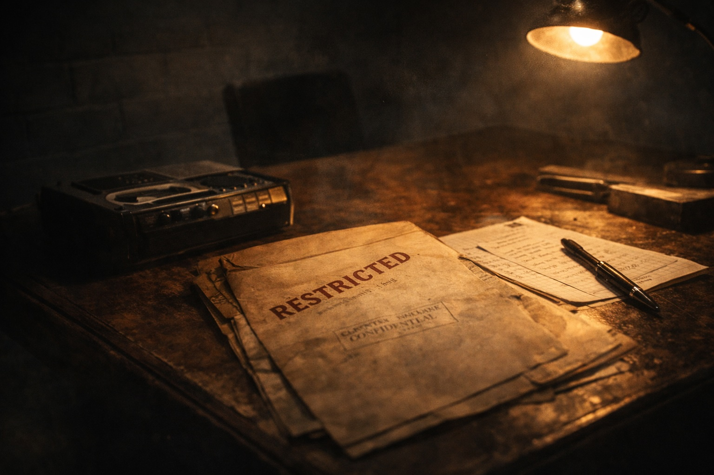

‘Is there a Nicholas Green present?’ I was sat in a lecture at Liverpool Polytechnic in 1979 grappling with remoteness in contract law when a supervisor entered and asked the question. ‘Here,’ I replied, raising my arm. ‘There’s a news reporter from The Daily Mirror to see you, ’the supervisor said.
All eyes were on me as I left with the hack. I was perplexed as to what interest any press, let alone a national red top, could possibly have with a young lad from Blackpool. The hack told me that his presence related to a hockey match that I had played in the previous weekend for Lytham St Anne’s. At the time, the press were obsessed with the rampant and sexually-charged celebrations of footballers after a goal had been scored.
A teammate of mine had hit the backboard with a powerful strike from a short corner, and we had congratulated him. The umpire became agitated, hooting on his whistle and waving his arms, ordering us back to the half-way line. Within minutes our captain, Peter Stone, scored a second. I took this opportunity for a little thespian fun. I ran over to Peter and hugged him, lifting his legs off the ground. When I returned him to the playing surface, I landed a whopper of a kiss on his lips, maintaining eye contact with the umpire as I did. What moral outrage! The umpire sped towards me, rummaging in his shorts. A bright red card was brandished and I was off for an early bath, leaving my teammates open-mouthed. A player down, due to amorous, rather than foul, play.
The national press were on the hunt for the phantom kisser of old Lytham Town. I was happy to report that I was the guilty party and entered into the spirit by imparting a few juicy quotes for the Daily Mirror. I ended with a bit of Shakespeare, culled from Richard III.
‘Teach not thy lip such scorn, for it was made for kissing, not for such contempt.’
After the ‘interview’, I headed to the sanctuary of my digs in Childwall, rather than return to the lecture hall. Placing the key in the lock, I heard cameras clicking. Tabloid snappers jumped out of the bushes. I posed for pics, including one where I blew a kiss at the lens, which was the one chosen for the articles. The sending off had been picked up by The Press Association, and the story appeared in every national newspaper, from The Sun to The Times. I even made it onto News at Ten in the famous ‘And, finally…’segment with Reggie Bosanquet recounting my indecent conduct to households all over the land. Yet, as with all ephemera, no sooner had I been anointed by the press I was duly archived. I could resume my law lectures unmolested by the tabloids.
Incidentally, it would take many years for me to gain further interest fromThe Times (see Chapter X). When I did, it was under ‘Court News’, as I had won a major Divisional Court ruling (R v Briggs).
I departed Liverpool three years after my kiss-and-tell episode with a 2:1 law degree. My tutor had made the fatal error of telling me that if I buckled down a first-class degree would be within my grasp. This advice fell on a sportsman’s ears, rather than an academic’s. The result was more boozy nights in Childwall hostelries, where I attempted to master darts and the new (sic) craze of space invaders.
Page 1 of 1